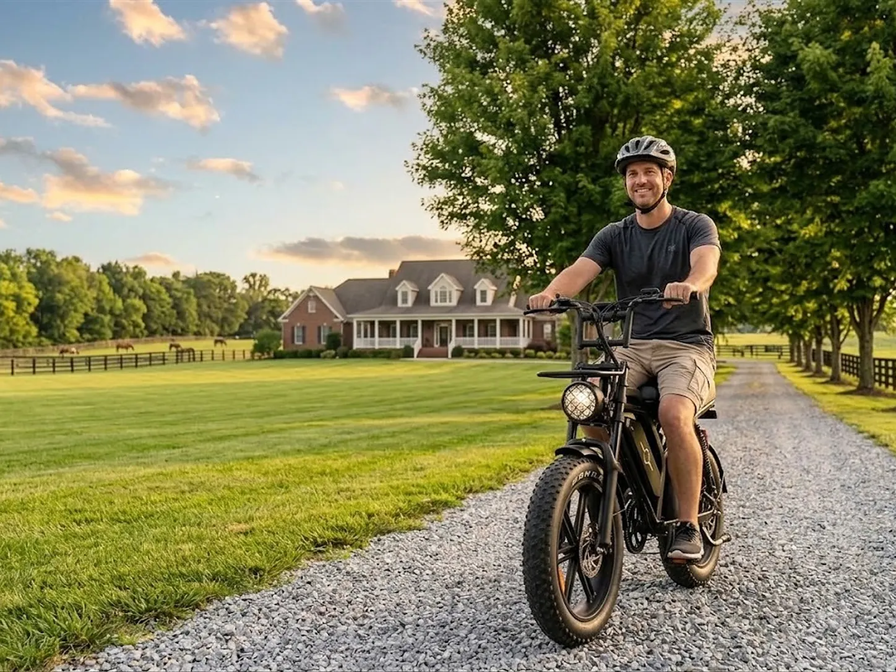
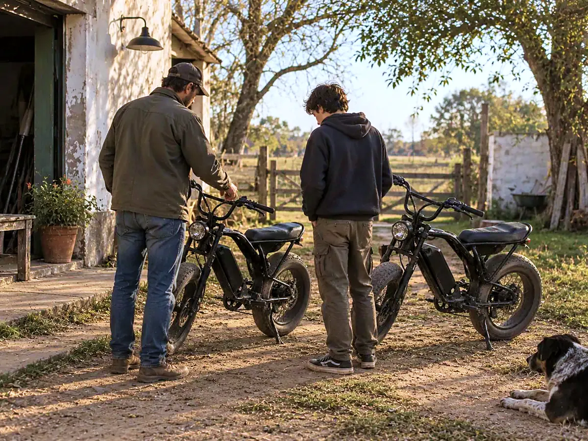
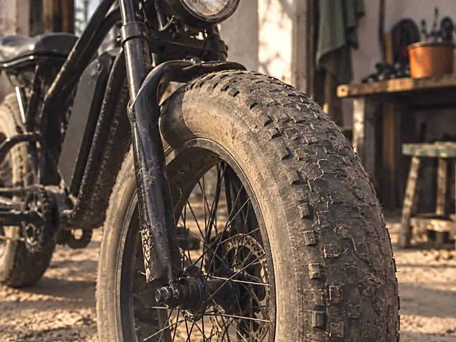
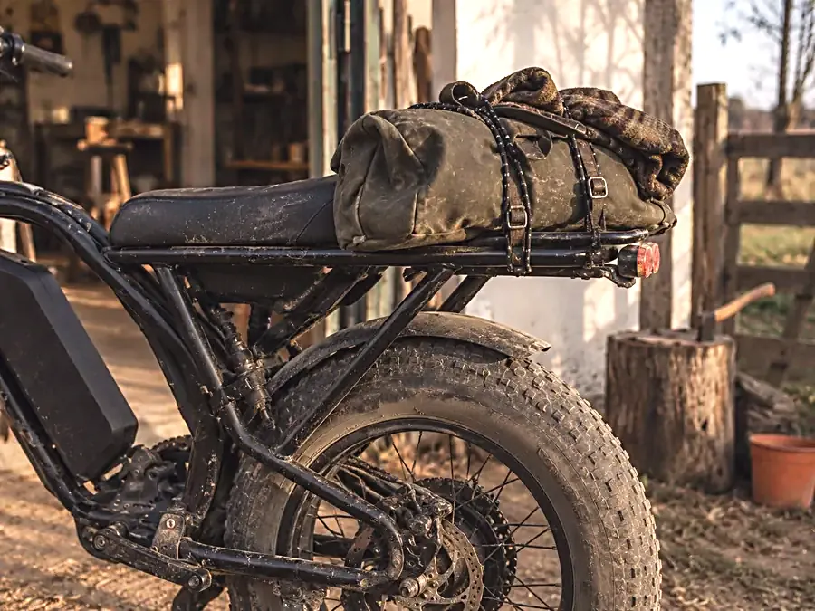
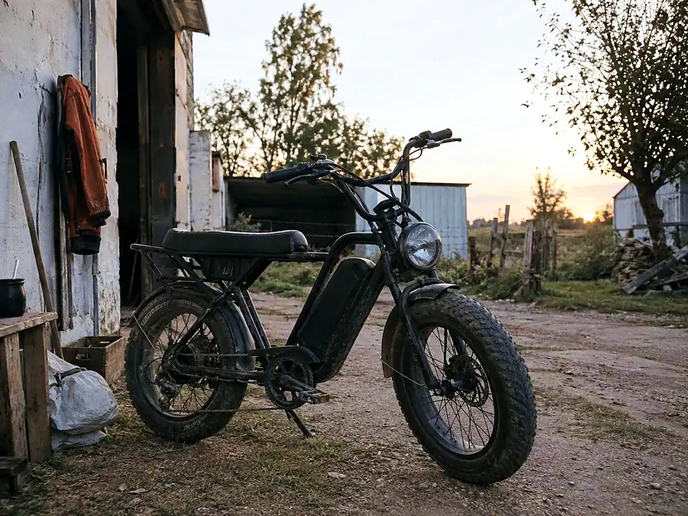
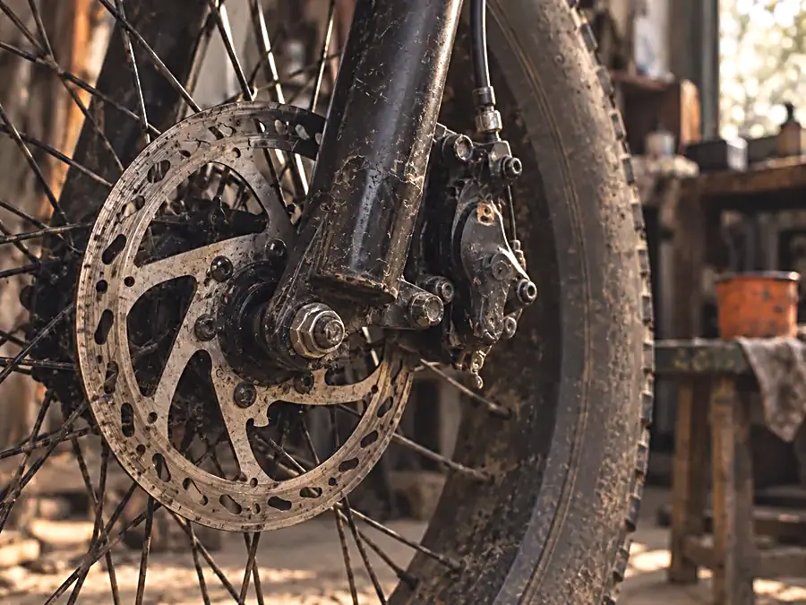
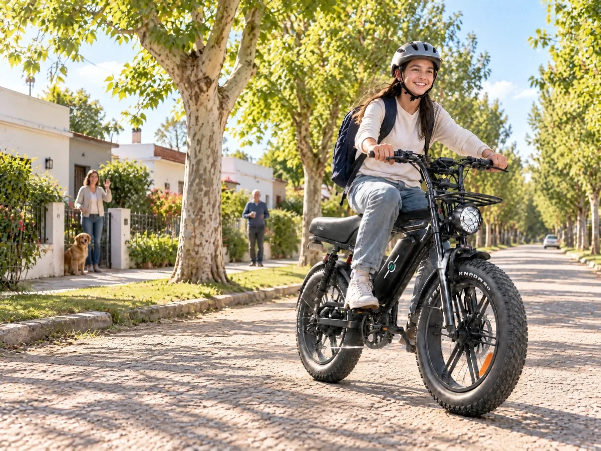

Potencia para el territorio real
La potencia no se elige solamente por el número. También importa el terreno, la pendiente, el viento, la carga, el tamaño de quien la usa y la distancia diaria. Te ayudamos a comparar el modelo con el recorrido real.

Fat e-bikes para ir, volver y seguir recorriendo.
Tu casa, el pueblo, la escuela, el club, la chacra o el casco. MC Ebikes te acompaña con
potencia, autonomía y respaldo local para que elijas con tu familia la bicicleta que
realmente tiene sentido para tu territorio.
La bicicleta la puede usar tu hijo o hija, pero la decisión se toma en familia. Antes de comprar, revisen juntos la distancia habitual, el tipo de camino, el peso que debe soportar, dónde se va a cargar, cómo se va a guardar y quién se va a ocupar del mantenimiento.
Vení a probarla, compará los modelos y consultá todo lo que necesites antes de decidir.
Ver cómo funciona el test ride
La potencia no se elige solamente por el número. También importa el terreno, la pendiente, el viento, la carga, el tamaño de quien la usa y la distancia diaria. Te ayudamos a comparar el modelo con el recorrido real.
La autonomía cambia según el modelo, el peso, el terreno, el viento, la presión de las cubiertas, la temperatura, la asistencia, el acelerador y la carga. Por eso no te mostramos solamente un número: te ayudamos a entender qué margen necesitás.
El adolescente puede probar cómo se siente la bicicleta. Los padres pueden preguntar por autonomía, carga, guardado, mantenimiento, garantía, service y condiciones de uso. La compra se decide con toda la información.
Si la bicicleta necesita un ajuste, un repuesto o un diagnóstico, tenés un lugar donde consultar. El service lo hacemos nosotros, en Castelar, y sabés a quién recurrir.
Elegí el recorrido principal y después compará el modelo recomendado con sus límites y condiciones.
Misma base robusta en toda la línea: cubiertas fat, frenos a disco y arranque por NFC. Elegí según el recorrido que hacés, no según el número más alto.
 Más elegida
Más elegida
 Doble batería
Doble batería


De la casa al galpón, del galpón al pueblo y del pueblo a casa. Tantas veces por día como haga falta. Por eso no vendemos la más potente: vendemos la que llega y vuelve.



Poné cuántos kilómetros necesitás recorrer por día y te mostramos una estimación para conversar. El resultado depende del precio de la energía, el vehículo de comparación, los días de uso, el mantenimiento y las condiciones reales.
Esta calculadora es orientativa. No representa una promesa de ahorro, ganancia ni recuperación de la inversión. La autonomía que ves es una estimación sobre la cifra publicada por el proveedor, ajustada por terreno y carga, con un margen del 30 % para que no vuelvas justo. El ahorro compara 22 días hábiles contra el costo de combustible de un vehículo de referencia, a valores de septiembre de 2026.

Vení a Castelar, subite y manejá el modelo que estás mirando. Si la va a usar un adolescente, vengan juntos: quien la usa puede conocerla y los padres pueden hacer preguntas sobre recorrido, batería, mantenimiento, garantía y service.
Reservar test ride en familia
La SW V20 Pro es el primer modelo a evaluar para recorridos cortos y cotidianos. La elección final depende de la distancia, el terreno, el peso, la carga y la autonomía que se necesite.
La SW V29 Pro aparece con hasta 110 km y doble batería. El resultado real depende de las condiciones de uso; no debe interpretarse como una distancia garantizada para todos los recorridos.
Sí. Ofrecemos test ride sin cargo en Castelar, sujeto a disponibilidad. Si quien va a manejar es menor de edad, la prueba se coordina con la madre, el padre o quien sea responsable.
El service lo hacemos nosotros, en Castelar, con taller propio y stock de los repuestos de mayor rotación. Escribinos y te decimos el proceso y los plazos para tu caso.
Tu mundo se mueve con vos cuando la bicicleta acompaña el recorrido real. Compará modelos, consultá todo y probala antes de decidir.